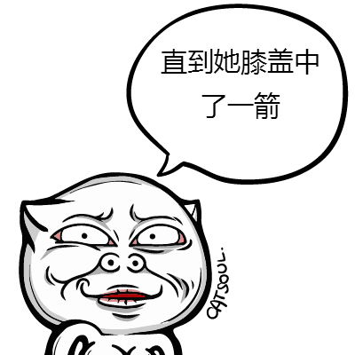
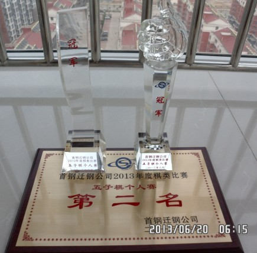

关于小天的那本书值不值的问题
首页
五子棋交流
#1 关于小天的那本书值不值的问题 作者：如火流年 发表时间：2013-6-11 1:49:39
嗯好吧我其实是想说一下，关于“这本书值不值”和“言论自由”这两个问题
这本书封面不错，比国内大多数正式出版的都顺眼
这本书几乎每一章（除了软件那章）都值一个75
我不知道是不是每一本都有一个签名，反正我拿到手翻过的那本，有作者亲笔签名，所以整本书贬值一毛钱（字好难看）
所以我觉得，这本书很值。这是第一个问题。
第二个问题，“言论自由”
你们觉得有人说这本书是骗人的，这属于言论自由的范畴么？
我觉得如果是和小天有私人恩怨，趁这个机会跳出来给差评、找事的，我觉得这不是言论自由，这样的言论应当被制止。
如果冲着名气去买这本书然后看不懂，然后觉得是被骗了的普通读者，我觉得，这是言论自由的范畴，你们不能干涉别人表达意见的自由。
为什么？言论自由的含义，在于人民有权说傻话。说傻话，说错话不是罪，就算傻话伤害了一些人，只要没有立即造成危险，没有直接伤害，就是在“言论自由”的保护范围内的。
如果我们只能说“正确”的话，“傻话”和”错话“不在保护范围内的话，那么言论就受到限制了，我不知道你们怎么理解，但是我想说的是：
我们有成为傻逼的权力。这是”言论自由“的含义。
所以我们怎么办？我们不怎么办，买了书看不懂你活该，你浪费了自己的钱你活该，你浪费了钱之后还被人嘲笑，也是活该。
说傻话被人嘲笑很正常，但是我希望，大家能不能不要用”言论自由“这个罪名来打击他？ 以后大伙出书别卖给他就是了。
我并不是为谁辩护，只是讨论。请回帖拍砖骂街的先看完我的帖子再回帖。任何非人身攻击的言论都是受欢迎的。
［ 小丸.net 于 2013-6-11 8:36:50 时奖励此帖[金币加 100 威望加1］
［ 游戏人间 于 2013-6-11 13:45:30 时花20金币送鲜花一朵］
［ 微微一笑 于 2013-6-11 14:38:50 时花20金币送鲜花一朵］
［ 冰雪笑醉 于 2013-6-12 2:06:04 时花20金币送鲜花一朵］
［ 冰雪笑醉 于 2013-6-12 2:12:19 时花20金币送鲜花一朵］
［ 冰雪笑醉 于 2013-6-12 2:12:19 时花20金币送鲜花一朵］
［ 冰雪笑醉 于 2013-6-12 2:12:19 时花20金币送鲜花一朵］
［ 冰雪笑醉 于 2013-6-12 2:12:19 时花20金币送鲜花一朵］
［ 冰雪笑醉 于 2013-6-12 2:12:19 时花20金币送鲜花一朵］
#2 Re:关于小天的那本书值不值的问题 作者：踵酃 发表时间：2013-6-11 4:30:42
楼主真的是小题大做了。。。值不值看自己本身的需求。
而且都说是面向中高级玩家的五子棋书籍啦。
我觉得里面的内容非常适合中区级别（不是菜鸟也不是达人的等级）。
初级可能觉得难懂，中级应该会感觉很好看， 高级大概觉得都已经了解或者补充，当做纪念也非常的好。 而且书很大，比较大气。拿着一本照个相也觉得挺威风的呀。
目录的VCN以及三大理论（本书精髓）是我想一窥书内容的重要原因。
这里要吐糟一下：tempo N 的用词定义我不买账。
三大思路中没有包涵“游戏人间”曾经说过只有他跟"棋情"才理解的高级抽象思路的描述，稍微有点失望。
个人觉得，此书还是很有价值的。
PS：签名挺好看的呀。
［ 冰雪笑醉 于 2013-6-12 2:05:28 时花20金币送鲜花一朵］
#3 Re:关于小天的那本书值不值的问题 作者：屏蔽 发表时间：2013-6-11 10:39:25
强烈建议大鱼出一本书《高级抽象》 ［ 小红眼镜 于 2013-6-11 10:41:44 时花20金币送鲜花一朵］
［ 小红眼镜 于 2013-6-11 10:41:44 时花20金币送鲜花一朵］
［ 小红眼镜 于 2013-6-11 10:41:44 时花20金币送鲜花一朵］
#4 Re:关于小天的那本书值不值的问题 作者：游戏人间 发表时间：2013-6-11 14:16:58
我也不知道什么是高级抽象啊。。。
其实小天关于弹性的描述已经把我的观点表达得比较清楚啦，可能没有亲身体验过的很难把握那种感觉，还是那句话“只可意会不可言传”
［ 冰雪笑醉 于 2013-6-12 1:54:29 时花20金币送鲜花一朵］
［ 冰雪笑醉 于 2013-6-12 1:54:29 时花20金币送鲜花一朵］
［ 冰雪笑醉 于 2013-6-12 1:54:29 时花20金币送鲜花一朵］
［ 冰雪笑醉 于 2013-6-12 1:54:29 时花20金币送鲜花一朵］
［ 冰雪笑醉 于 2013-6-12 1:54:29 时花20金币送鲜花一朵］
#5 Re:关于小天的那本书值不值的问题 作者：清风明月月 发表时间：2013-6-11 21:53:09
唉，，讨论值不值的没意思，，，反正高手们出书我都会买，，支持他们出书，支持大鱼出书，，，。。。。
#6 Re:关于小天的那本书值不值的问题 作者：夏百萧 发表时间：2013-6-11 23:13:00
五子棋的书我只买过一本新井华石的《连珠必胜法》
七年前买的
#7 Re:关于小天的那本书值不值的问题 作者：如火流年 发表时间：2013-6-12 0:39:09
新井华石那本8块钱，非常值。全部看懂基本就有初段水平了。
#8 Re:关于小天的那本书值不值的问题 作者：南京小飞机 发表时间：2013-6-12 1:11:55
认为值得，去买；认为值得，但是因为种种原因想买未果。认为不值得就别去买；认为不值得，一边叫嚣如何不值得一边去买的人……
PS：日本车性价比不错，你可以有民族情绪抵制坚决不买，但你不能否认别人的优点。
个人坚决抵制日韩车，但我自己没必要叫嚣虽然省油性价比高，但是不安全，国产后偷工减料。CR-V的销量还是呼呼上涨。虽然2013年5月最新销售排行榜日本车深受打击。
我在讲什么？ 我晕了 ， 你晕了没？
#9 Re:关于小天的那本书值不值的问题 作者：冰雪笑醉 发表时间：2013-6-12 1:56:45
小飞机你买了日本车？其实也没什么，他们做工确实比较精细
#10 Re:冰雪笑醉【==Re:关于小天的那本书值不值的问题==】 作者：南京小飞机 发表时间：2013-6-12 22:02:11
NO 新君威……
#11 Re:关于小天的那本书值不值的问题 作者：赛佐为 发表时间：2013-6-13 13:24:21
据说快递单上都有签名。。。 ［ 小红眼镜 于 2013-6-13 17:05:25 时花20金币送鲜花一朵］
［ 小红眼镜 于 2013-6-13 17:05:25 时花20金币送鲜花一朵］
#12 Re:关于小天的那本书值不值的问题 作者：非黑既白 发表时间：2013-6-13 15:14:07
 75元一本书，有什么值不值的！ 首先作者是获得过多次荣誉的名人，其次花费了那么多精力去归纳整理、印刷并签名...... 说不值得的人，您是把75元当做750、7500、750000看待了吧？
75元一本书，有什么值不值的！ 首先作者是获得过多次荣誉的名人，其次花费了那么多精力去归纳整理、印刷并签名...... 说不值得的人，您是把75元当做750、7500、750000看待了吧？
#13 Re:关于小天的那本书值不值的问题 作者：非黑既白 发表时间：2013-6-13 15:16:35
也是，75元可以买一大块猪头肉呢 
#14 Re:关于小天的那本书值不值的问题 作者：屏蔽 发表时间：2013-6-13 16:58:12
楼上好久不见 想死了 ［ 小红眼镜 于 2013-6-13 16:59:12 时花20金币送鲜花一朵］
#15 Re:关于小天的那本书值不值的问题 作者：赛佐为 发表时间：2013-6-13 17:18:27
咦。MS有JQ。 ［ 小红眼镜 于 2013-6-14 0:30:07 时花20金币送鲜花一朵］
［ 小红眼镜 于 2013-6-14 0:30:07 时花20金币送鲜花一朵］
［ 小红眼镜 于 2013-6-14 0:30:07 时花20金币送鲜花一朵］
#16 Re:关于小天的那本书值不值的问题 作者：屏蔽 发表时间：2013-6-13 17:30:45
楼上你是不知道当初那一场轰轰烈烈缠绵悱恻的爱恨情仇！
#17 Re:关于小天的那本书值不值的问题 作者：闭才 发表时间：2013-6-13 18:06:36
要不下次卖书前搞个资格审查 没资格的都不卖给他
#18 Re:关于小天的那本书值不值的问题 作者：如火流年 发表时间：2013-6-13 21:21:19
围观屏蔽小正太的JQ
#19 Re:屏蔽【==Re:关于小天的那本书值不值的问题==】 作者：微微一笑 发表时间：2013-6-13 22:27:40
楼上你是不知道当初那一场轰轰烈烈缠绵悱恻的爱恨情仇！ ==============================================
道长你&
#20 Re:关于小天的那本书值不值的问题 作者：小丸.net 发表时间：2013-6-13 22:47:44
我刚看到谁发了说道长的性取向不明。。。。。
#21 Re:关于小天的那本书值不值的问题 作者：鱼岛岛主 发表时间：2013-6-13 22:58:24
回楼上是我，我说的主要不是取向不明，而是兼容性强这一点。
#22 re:关于小天的那本书值不值的问题 作者：小丸.net 发表时间：2013-6-13 23:12:13
通吃啊，想到11年全国赛就后怕！！
#23 Re:屏蔽【==Re:关于小天的那本书值不值的问题==】 作者：非黑既白 发表时间：2013-6-14 12:21:20
瞧瞧这论坛，被你这样的人才搞得比墓地都冷清，您就没反思点什么吗？
想想这论坛昔日的繁荣景象，您真的无动于衷吗？
#24 Re:屏蔽【==Re:关于小天的那本书值不值的问题==】 作者：非黑既白 发表时间：2013-6-14 12:24:47
李一同学唱歌跑调，做事也跑调呀 ！ 对了，相貌也挺跑调的。 对不起，我不该说实话！［此帖子已被 非黑既白 在 2013-6-14 12:27:00 编辑过］
#25 Re:关于小天的那本书值不值的问题 作者：赛佐为 发表时间：2013-6-14 12:34:15
爱之深。恨之切。 ［ 小红眼镜 于 2013-6-14 12:36:05 时花20金币送鲜花一朵］
［ 小红眼镜 于 2013-6-14 12:36:05 时花20金币送鲜花一朵］
［ 小红眼镜 于 2013-6-14 12:36:05 时花20金币送鲜花一朵］
#26 Re:关于小天的那本书值不值的问题 作者：恺恺 发表时间：2013-6-14 12:34:19
围观 ［ 小红眼镜 于 2013-6-14 12:37:05 时花20金币送鲜花一朵］
#27 Re:关于小天的那本书值不值的问题 作者：赛佐为 发表时间：2013-6-14 12:36:05
幽灵默默滴飘过。。。。好冷清的说。。。。
［ 小红眼镜 于 2013-6-14 12:37:30 时花20金币送鲜花一朵］
［ 小红眼镜 于 2013-6-14 12:37:30 时花20金币送鲜花一朵］
［ 小红眼镜 于 2013-6-14 12:37:30 时花20金币送鲜花一朵］
#28 Re:关于小天的那本书值不值的问题 作者：小红眼镜 发表时间：2013-6-14 12:36:43
大五吧组团围观屏蔽大师。。。
［ 赛佐为 于 2013-6-14 13:06:59 时花20金币送鲜花一朵］
#29 Re:关于小天的那本书值不值的问题 作者：一块金子 发表时间：2013-6-14 12:36:59
不明觉厉
［ 小红眼镜 于 2013-6-14 12:39:28 时花20金币送鲜花一朵］
#30 Re:关于小天的那本书值不值的问题 作者：鱼岛岛主 发表时间：2013-6-14 13:09:25
李一唱过歌吗？
#31 Re:赛佐为【==Re:关于小天的那本书值不值的问题==】 作者：非黑既白 发表时间：2013-6-15 11:27:03
您是用膝盖思考问题的吗？
#32 Re:非黑既白【==Re:赛佐为【==Re:关于小天的那本书值不值的问题==】==】 作者：鱼岛岛主 发表时间：2013-6-15 11:34:03

#33 Re:关于小天的那本书值不值的问题 作者：屏蔽 发表时间：2013-6-15 11:42:20
9AD0GJC2BD%7B[SUU.jpg)
我保证不是我干的
#34 re:关于小天的那本书值不值的问题 作者：小丸.net 发表时间：2013-6-15 11:47:06
你也干不了！！！
#35 Re:关于小天的那本书值不值的问题 作者：棋空 发表时间：2013-6-15 11:48:25
在这里试一下，随便回个贴就涨10个金币吗？
#36 Re:关于小天的那本书值不值的问题 作者：棋空 发表时间：2013-6-15 11:50:13
咳嗽一下。。。。。
#37 Re:关于小天的那本书值不值的问题 作者：小丸.net 发表时间：2013-6-15 11:55:51
别试了，30楼以后就没有了。。。。哥哥早就防了你这招了。
#38 Re:关于小天的那本书值不值的问题 作者：赛佐为 发表时间：2013-6-15 16:50:44
真是基情洋溢的帖子啊。。。 ［ 小红眼镜 于 2013-6-15 16:54:07 时花20金币送鲜花一朵］
［ 小红眼镜 于 2013-6-15 16:54:07 时花20金币送鲜花一朵］
［ 小红眼镜 于 2013-6-15 16:54:07 时花20金币送鲜花一朵］
#39 Re:关于小天的那本书值不值的问题 作者：掌棋如烟 发表时间：2013-6-15 20:32:03
我来坐等小红眼镜的花的。。。。 ［ 小红眼镜 于 2013-6-21 0:14:06 时花20金币送鲜花一朵］
#40 Re:掌棋如烟【==Re:关于小天的那本书值不值的问题==】 作者：小红眼镜 发表时间：2013-6-21 0:13:47
引用：
原文由 掌棋如烟 发表于 2013-6-15 20:32:03 :
我来坐等小红眼镜的花的。。。。
.。。。。。打劫你这是。。。。。
#41 Re:关于小天的那本书值不值的问题 作者：屏蔽 发表时间：2013-6-21 9:06:51
39楼昨天是不是有比赛了 快上棋评！
#42 Re:小红眼镜【==Re:掌棋如烟【==Re:关于小天的那本书值不值的问题==】==】 作者：赛佐为 发表时间：2013-6-21 16:39:03
引用：
原文由 小红眼镜 发表于 2013-6-21 0:13:47 :
引用：
原文由 掌棋如烟 发表于 2013-6-15 20:32:03 :
我来坐等小红眼镜的花的。。。。
.。。。。。打劫你这是。。。。。
我也要。。。。。
［ 小红眼镜 于 2013-6-21 17:58:10 时花20金币送鲜花一朵］
［ 小红眼镜 于 2013-6-21 17:58:10 时花20金币送鲜花一朵］
［ 小红眼镜 于 2013-6-21 17:58:10 时花20金币送鲜花一朵］
#43 Re:关于小天的那本书值不值的问题 作者：掌棋如烟 发表时间：2013-6-21 19:57:25
公司个比赛有啥棋评呀，无禁无交换的
唯一称道的就是奖杯奖牌做的要比全国赛好的多了 玻璃的死沉死沉了，，，

［此帖子已被 掌棋如烟 在 2013-6-21 20:16:56 编辑过］
#44 Re:关于小天的那本书值不值的问题 作者：逍遥一梦 发表时间：2013-6-23 14:52:13
大老远的跑这来看聊天。。。。。值不值？穷人买个书指望能看了就一步登天！结果。。。。于是。。。；有钱人买书是图个奢享、摆设、闲趣、品位。至少对小天出书所费心血表示敬意。
#45 Re:关于小天的那本书值不值的问题 作者：继续沉醉 发表时间：2013-7-19 14:34:26
买买买